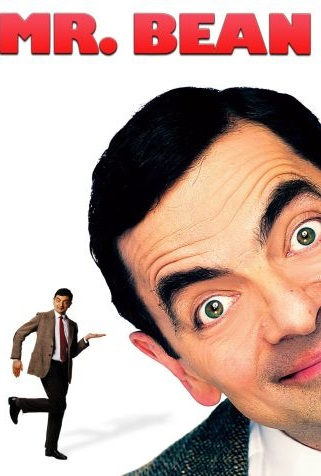

Mr. Bean

Ano: 1989 - 1995
Duração: 30 min
Gênero: Comédia
Diretor: Richard Curtis, Rowan Atkinson
Elenco: Rowan Atkinson, Lucy Fleming, Owen Brenman
Sinopse: Mr. Bean é um atrapalhado homem adulto, que sempre encontra dificuldades em enfrentar situações comuns do dia-a-dia. Vivendo em seu pequeno apartamento no norte de Londres com seu ursinho de pelúcia Teddy, ele não é de falar muito... Ingênuo, porém persistente, ele entra em grandes e divertidas confusões.